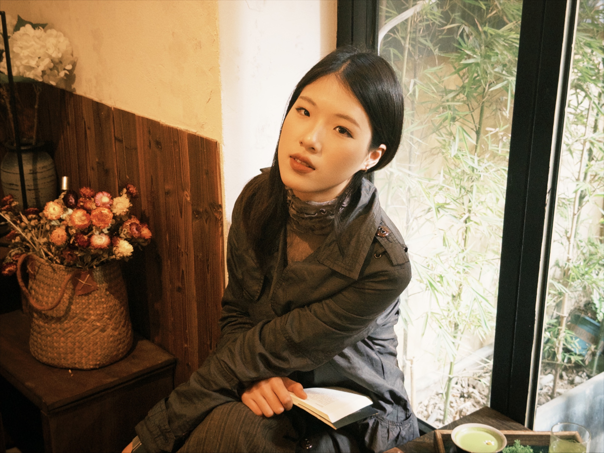

个人简介
纪彤心，2002年生。她的创作常以摄影、影像、行为等综合媒介展开，围绕自我身份、身体经验、记忆与物像之间的关系进行探索。

ABOUT / 关于
纪彤心纪彤心，2002年生。她的创作常以摄影、影像、行为等综合媒介展开，围绕自我身份、身体经验、记忆与物像之间的关系进行探索。
Jade Tongxin Ji, born in 2002. Her practice often works across photography, moving image and performance, exploring self-identity, bodily experience, memory and the relationship between image and object.
2024.09-至今 硕士，西安美术学院影视动画系，摄影艺术方向
2024.09-present MFA Candidate, Photography Art, Department of Film and Animation, Xi'an Academy of Fine Arts
2020.09-2024.06 本科，西安美术学院影视动画系，摄影专业
2020.09-2024.06 BFA, Photography, Department of Film and Animation, Xi'an Academy of Fine Arts
苏晟
Sheng Su
2026.04-2026.06 巴黎艺术城驻地，法国巴黎
2026.04-2026.06 Artist Residency, Cité Internationale des Arts, Paris, France
2025.10-2025.11 鄠邑区蔡家坡村驻地，陕西西安
2025.10-2025.11 Artist Residency, Caijiapo Village, Huyi District, Xi'an, Shaanxi, China